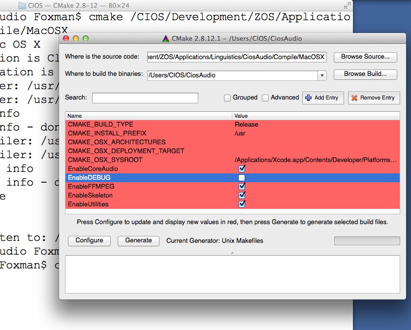
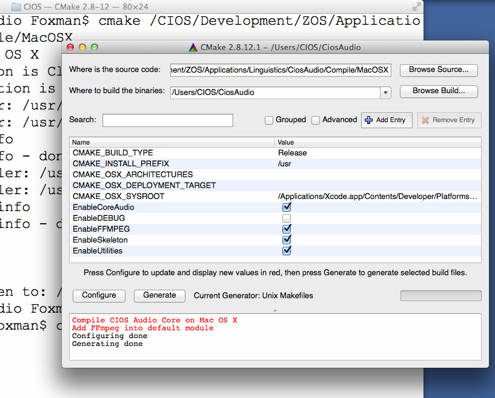

Compilation on Apple Mac OS X
Compile CIOS Audio Core library
It is easy to compile the CIOS Audio Core when the environment is ready:|
mkdir BuildCiosAudioCore |
Modify settings
If you like to modify the settings, we suggest you use "cmake-gui". If you need to use parameters by command line, please go to CMake official site http://www.cmake.org and read related documents|
cd Somewhere/Temporary
mkdir CiosAudio |

Then, change what you need:

Press Configure:

Press Generate:

Then, issue the commands:
|
cd CiosAudio |
Modify default Namespace
The default namespace of CIOS Audio Core is CiosAudio. You can modify namespace by the following methods:|
cd Somewhere/Temporary
mkdir CiosAudio |
Utilities and FFmpeg
If you want to enable FFmpeg, you will have to enable Utilities too.Compile CIOS Audio Core applications
Applications must link with "libCaCore.a". And because we use Apple Core Audio as the underlying mechanism, you must link with the following four frameworks:
- CoreAudio
- CoreServices
- AudioUnit
- AudioToolBox
If you are using FFmpeg, you must understand your FFmpeg link with what extra libraries, details please refer Compiling FFmpeg. In most cases, the following libraries are to be linked:
- avcodec
- avformat
- avutil
- swresample
- swscale
- iconv
- z
- bz2
- mp3lame
- twolame
- gsm
If you do not actually know which libraries are required to be linked, ask the FFmpeg user groups, it will be a better solution.
Regular C++ program
Using library
In your Makefile, add include path and lib path, and "-lCaCore":Embed into your C++ program
Just add the following hpp and cpp in the directory into your project file:|
CiosAudio/*.hpp |
And, remember to add the library and include path for FFmpeg.
Qt
Using library
In your Qt program PRO, add the following:|
INCLUDEPATH += ${WHEREVER_CIOS_AUDIO_INCLUDE_PATH} |
And, remember to add the library and include path for FFmpeg.
Embed into Qt program
In your Qt program PRO, add the following:|
include ($${PWD}/CiosAudio/CiosAudio.pri) |
And, remember to add the library and include path for FFmpeg.